Vector · первый экран письма · 24 октября
Первый экран: референсы
Дом с решётками с главной убираем. Ниже две идеи нового кадра. Первую придумал я. Вторую выбрал скилл emergence-math: колода ограничений, тяга по золотому сечению и проверка Скептиком. Под каждой идеей референсы и что из каждого берём. Кадр можно создать с нуля: он не выдаётся за фото центра, поэтому ничего не обещает.
Заголовок письма остаётся: «Здравствуйте. Выход есть.»
А. Утро в саду: тени листвы на письме
Придумал яКремовая стена или бумага, на неё падает утреннее солнце сквозь листву. Тени листьев медленно качаются, солнечное пятно чуть теплеет. Людей и предметов нет.
Тени идут прямо по письму: по приветствию и первым строкам, будто письмо лежит на подоконнике в саду. Справа в арке вместо фасада наш сад с газоном и фонтаном, без здания.
Цвета бренда сами: кремовый и зелёный. Покой без слов «покой». Сад — настоящий образ центра, а тень листвы его продолжает. Через месяц не надоест.
Бесшовная петля 5–6 с, листва колышется еле заметно. На телефоне тот же слой. При «меньше движения» неподвижный кадр.
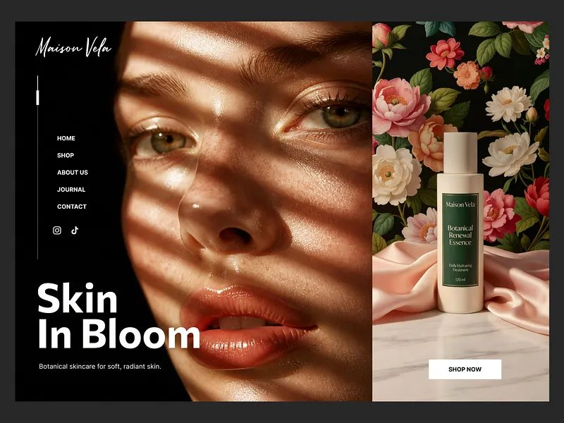
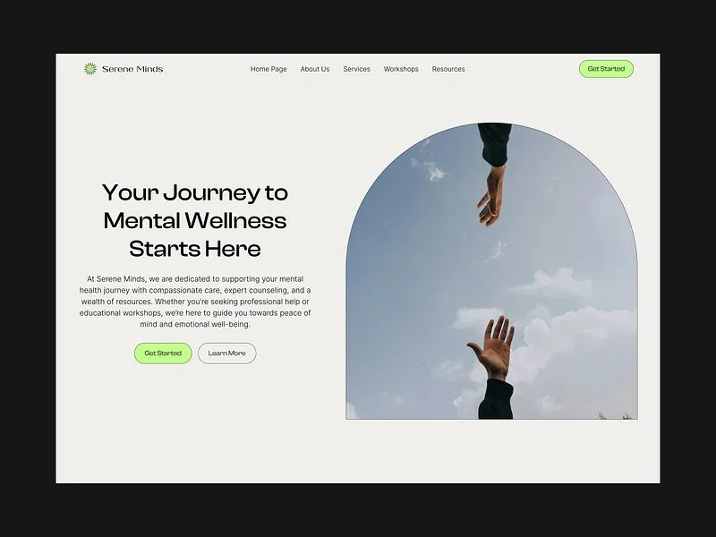
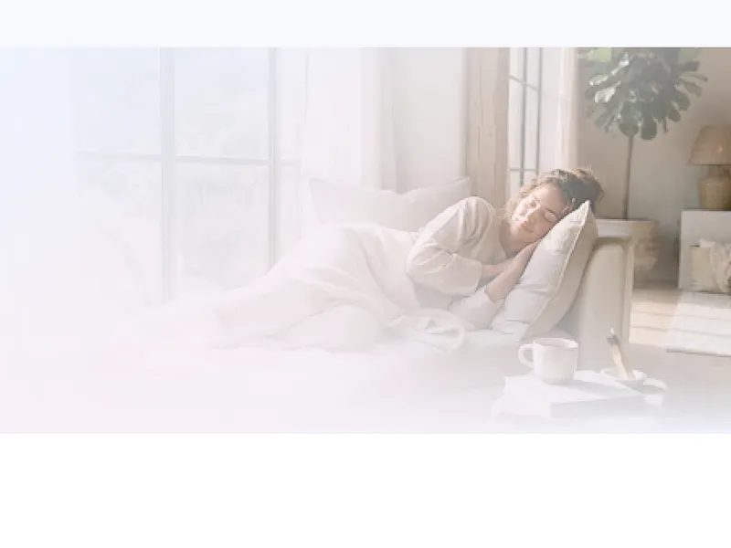
- Кадр тени листвы: серия из 4 вариантов (Kling Image 3.0)8 кредитов
- После вашего «да» — петля 5 с из выбранного кадра (Kling Video 3.0)40 кредитов
- Арка: сад с газоном у фонтана — уже есть, без здания0
Б. От ночи к утру
Скилл emergence-mathТяга: зерно 1672769147, колода abb25969. Выпало: сюжет «звёздное небо, которое светлеет до утра» [8/8] · движение «кадр идёт по прокрутке» [6/7] · запрет «без людей в кадре» [2/7]. Новизна D₀ = 0,758, Скептик: E = 1 · 0,85^0,618 · 0,758^0,382 = 0,81, порог 0,618 пройден. Дистанция до второй тяги 0,476.
Ночное небо над горами под Самаркандом. Небо не синее, а глубокое зелёное, как цвет бренда. Звёзды, тонкий силуэт гор. Людей нет.
Первый экран ночной: приветствие светлыми буквами на тёмном. Посетитель листает вниз, и небо светлеет: звёзды гаснут, над горами мятный, потом кремовый рассвет. Письмо продолжается уже на утренней бумаге.
Это прямо первая фраза письма: «Если вы читаете это поздно вечером…». Человек сам листанием приводит ночь к утру. Сайт показывает выход, а не обещает его.
Видео рассвета идёт за прокруткой, вверх и вниз. Кульминация, восход над горами, на φ⁻¹ ≈ 62 % пути. На телефоне вертикальный кадр. При «меньше движения» неподвижный рассвет.
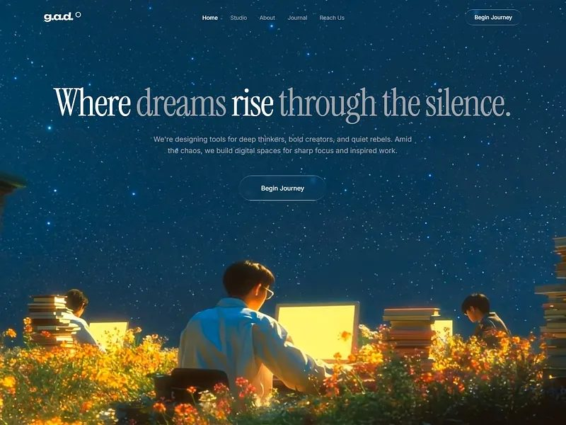
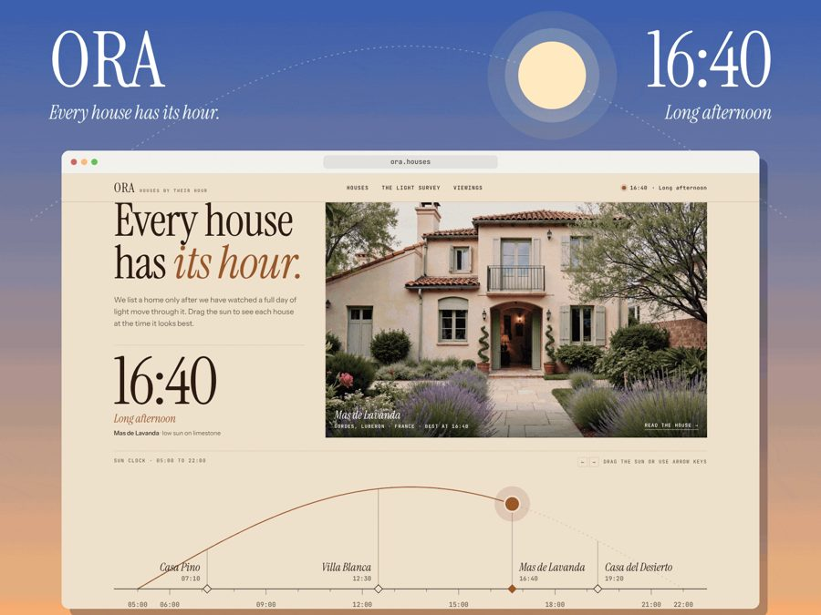
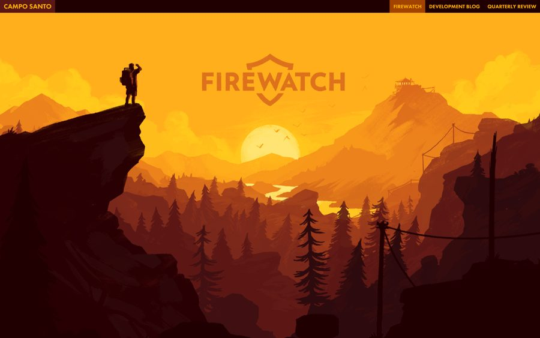
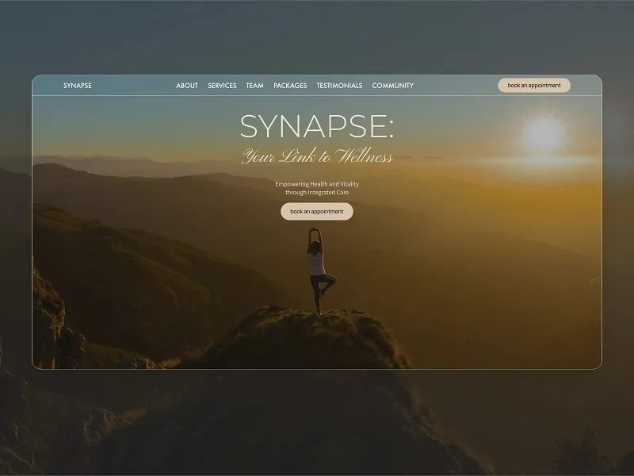
- Два кадра, ночь и рассвет: по серии из 4 вариантов (Kling Image 3.0)16 кредитов
- После вашего «да» — переход ночь → утро между ними, 5 с (Kling Video 3.0)40 кредитов
- Или без генерации: звёзды, горы и рассвет нарисую кодом. Беднее фото, зато без кредитов0
Запас: вода крупно
Вторая тяга, E = 0,67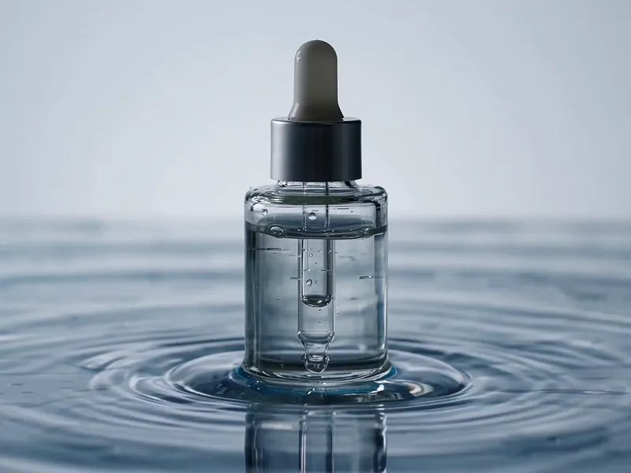
Чего не берём
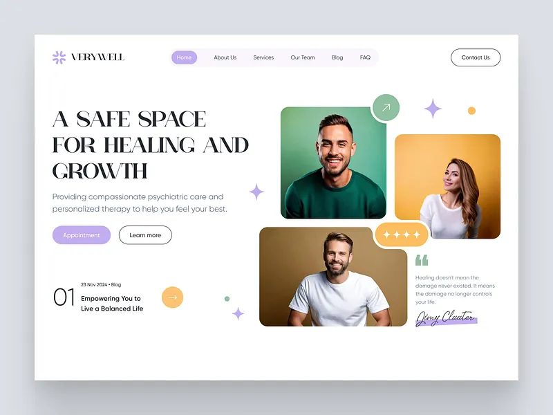
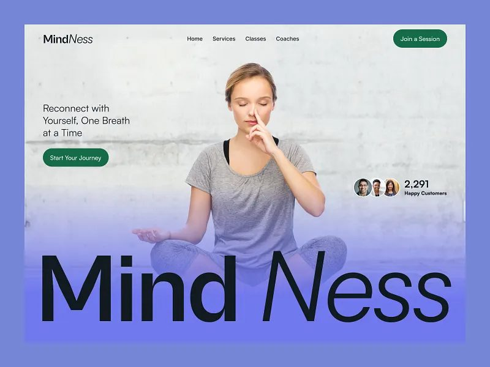
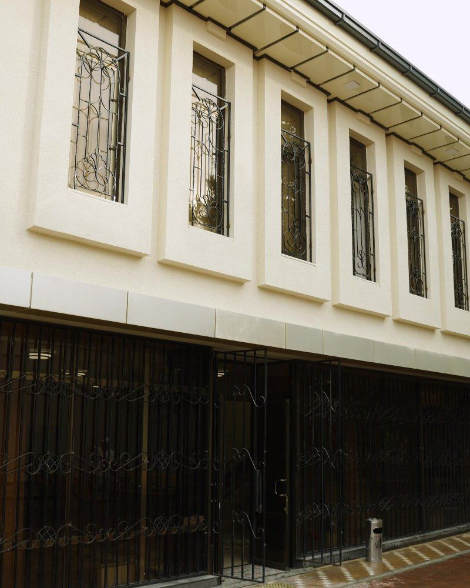
Что дальше
- Вы выбираете А, Б или обе, можно с правками. Например, Б кодом без кредитов.
- Я делаю неподвижные кадры и ставлю их на первый экран письма, чтобы вы увидели вживую до видео. Серия — 8 кредитов. У вас на Kling 351.
- После вашего «да» по кадру делаю видео и ставлю на сайт. Без «да» видео не делаю: в прошлый раз 40 кредитов ушло на ленту, которую сняли.